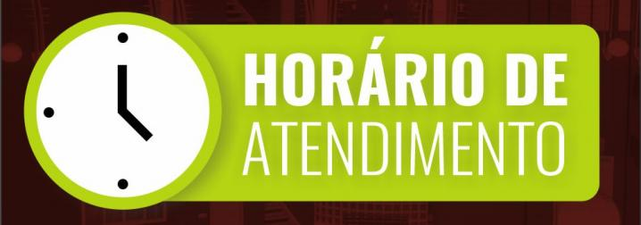

| Serviços | Segunda a sexta | Sábados | Feriados | Exame geral | 08h - 19h | 08h - 15h | 08h - 16h |
|---|---|---|---|
| Laborátorio | 08h - 19h | 08h - 14h | 08h - 14h |
| Raio-x | 08h - 19h | 08h - 14h | 08h - 14h |
| Banho e tossa | - | 08h - 19h | 08h - 10h |
| Castração | - | 08h - 19h | 08h - 19h |
